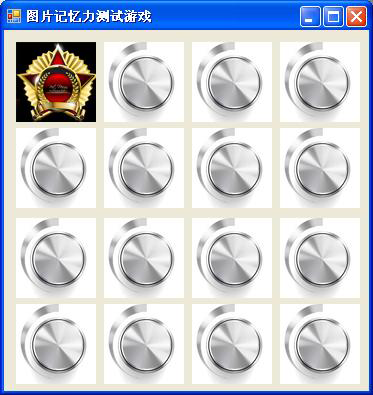

1) 在Form1.cs设计视图下双击第一个图片控件pb1，即可在Form1.cs文件的末尾自动添加一个空方法pb1_Click。如源代码 8 所示。
2) 参考源代码7，可以在方法pb1_Click中添加对第一个pb1的Image属性进行赋值的语句，如源代码 8 所示。
问题：运行一下，发现有编译错误， 思考：为什么简单地挪了个地方就出现问题呢？3) 将变量pList、mm、bb数组的申请移出到class的范围下。即在源代码1的第12行之后添加如源代码10所示的3行。
4) 去除initPics方法中pList、mm、bb这三个变量的声明部分，只留下初始化部分，改变后initPics方法的内容如源代码11所示。其中第4、5、15行为改动的行。
问题：这时发现mm、pList后面的大括号中的内容出现很多红色波浪线，表示有错误。 思考：为什么合起来对的，分开来就错呢？
1) 添加对图片控件显示的图片的记录。
思考： 什么样的数据类型比较适合做此类记录？ 每个图片控件在点击之后会有两个状态，正面或背面，可以用一个bool类型的数组flaglist来记录，假设true为背面，false为正面。更新后Form1.cs 的内容如源代码 12所示。i. 在Form1类中添加变量flaglist。如源代码 12所示的第16行。
ii. 在Form1类的构造方法中添加flaglist的初始化。因为一开始，图片都是背面的，所以flaglist数组的元素初始值都是true。可以象初始化aa数组那样将所有的值挨个写出来，也可以利用for循环来对每个元素赋同一个值来做，在代码的书写上，后者可以提高效率，尤其是初始值在开发过程中可能会发生变化的情况下。如源代码 12所示的第21~23行。
iii. 在pb1_Click方法中修改代码，使得连续点击同一张图片控件，可以在背面和正面之间切换。如源代码 12所示的第50-58行。
1) 在设计视图下，点击所有图片，使得自动生成其余15个点击事件的方法pb2_Click~pb16_Click。
2) 回到代码视图，观察pb1_Click，如果里面的代码放到pb2_Click中，只需要将数组元素的位置由0改成1。
3) Form1类中添加一个带有整数型参数pbi的方法pbClick, 将pb1_Click中的代码放到pbClick中，并将其中的数组元素位置索引，即方括号里面的内容0改为pbi，在pb1_Click方法中，调用pbClick，参数为0；
4) 在其余15个图片控件的点击事件方法中，调用pbClick，参数分别为1~15；
5) 完成后Form1.cs中图片控件点击事件的处理代码如源代码13所示。
分析对象和所要实现的功能，找出其中的共性和规律，进行适当的封装，既能简化代码，也能在后续维护中减少工作量。
pbClickAllInOne方法的设计思路如下：让所有的图片控件点击事件处理指向同一个方法pbClickAllInOne，在方法pbClickAllInOne中，需要找到图片控件的序号，传递给方法pb_Click进行处理。进一步思考，在该方法中需要有一个参数（突破点）来指代是哪个图片控件，然后根据该图片控件和图片控件的序号之间的联系（突破点）来找到图片控件的序号，再将图片控件的序号作为参数取值（突破点）调用方法pb_Click进行处理。
从以上3个突破点入手，可以得到pbClickAllInOne方法的设计框图如图CSG 24所示。
1) 首先将所有图片控件的点击事件处理全部改为一个新的处理方法pbClickAllInOne。
i. 回到Form1设计视图，选中第一个图片控件，打开属性页，切换到事件列表，在Click 处，将原来的pb1_Click改为pbClickAllInOne， 如图CSG25所示。会在Form1.cs中产生一个空的pbClickAllInOne方法如源代码14所示。
ii. 参照步骤#a, 将其余15个图片控件的Click 事件处理都改为pbClickAllInOne。
2) 为方法pbClickAllInOne添加内容
3) 删除已经没有使用的pb1_Click ~ pb16_Click 方法。
将在近日完成，欢迎回来